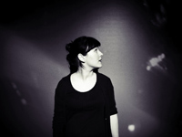

ANNE FREIBERG
Oberlausitz/Berlin
acoustic pop
Hudba Anny Freiberg – akusticky zemitá hudba pro všechny, kteří rádi poslouchají, nechají si vyprávět příběhy a nechají se poddávat melancholii. Hudba protkaná poesií a ovlivněná folkovou tvorbou (velká spojitost s britským a irským folkem). Po pokusech s hraním v různých větších hudebních konstelacích dospěla k její původní, redukované kvintesenci: hlas, kytara a autenticita.